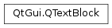
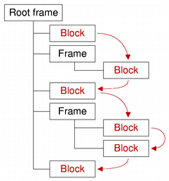

QTextBlock¶
Synopsis¶
Functions¶
- def
__eq__(o) - def
__iter__() - def
__lt__(o) - def
__ne__(o) - def
begin() - def
blockFormat() - def
blockFormatIndex() - def
blockNumber() - def
charFormat() - def
charFormatIndex() - def
clearLayout() - def
contains(position) - def
document() - def
end() - def
firstLineNumber() - def
fragmentIndex() - def
isValid() - def
isVisible() - def
layout() - def
length() - def
lineCount() - def
next() - def
position() - def
previous() - def
revision() - def
setLineCount(count) - def
setRevision(rev) - def
setUserData(data) - def
setUserState(state) - def
setVisible(visible) - def
text() - def
textDirection() - def
textFormats() - def
textList() - def
userData() - def
userState()
Detailed Description¶
The
PySide2.QtGui.QTextBlockclass provides a container for text fragments in aPySide2.QtGui.QTextDocument.A text block encapsulates a block or paragraph of text in a
PySide2.QtGui.QTextDocument.PySide2.QtGui.QTextBlockprovides read-only access to the block/paragraph structure of QTextDocuments. It is mainly of use if you want to implement your own layouts for the visual representation of aPySide2.QtGui.QTextDocument, or if you want to iterate over a document and write out the contents in your own custom format.Text blocks are created by their parent documents. If you need to create a new text block, or modify the contents of a document while examining its contents, use the cursor-based interface provided by
PySide2.QtGui.QTextCursorinstead.Each text block is located at a specific
PySide2.QtGui.QTextBlock.position()in aPySide2.QtGui.QTextBlock.document(). The contents of the block can be obtained by using thePySide2.QtGui.QTextBlock.text()function. ThePySide2.QtGui.QTextBlock.length()function determines the block’s size within the document (including formatting characters). The visual properties of the block are determined by its textPySide2.QtGui.QTextBlock.layout(), itsPySide2.QtGui.QTextBlock.charFormat(), and itsPySide2.QtGui.QTextBlock.blockFormat().The
PySide2.QtGui.QTextBlock.next()andPySide2.QtGui.QTextBlock.previous()functions enable iteration over consecutive valid blocks in a document under the condition that the document is not modified by other means during the iteration process. Note that, although blocks are returned in sequence, adjacent blocks may come from different places in the document structure. The validity of a block can be determined by callingPySide2.QtGui.QTextBlock.isValid().
PySide2.QtGui.QTextBlockprovides comparison operators to make it easier to work with blocks:PySide2.QtGui.QTextBlock.operator==()compares two block for equality,PySide2.QtGui.QTextBlock.operator!=()compares two blocks for inequality, andPySide2.QtGui.QTextBlock.operator<()determines whether a block precedes another in the same document.
-
class
PySide2.QtGui.QTextBlock¶ -
class
PySide2.QtGui.QTextBlock(o) Parameters: o – PySide2.QtGui.QTextBlockCopies the
othertext block’s attributes to this text block.
-
PySide2.QtGui.QTextBlock.__iter__()¶ Return type: PyObject
-
PySide2.QtGui.QTextBlock.begin()¶ Return type: PySide2.QtGui.QTextBlock::iteratorReturns a text block iterator pointing to the beginning of the text block.
See also
-
PySide2.QtGui.QTextBlock.blockFormat()¶ Return type: PySide2.QtGui.QTextBlockFormatReturns the
PySide2.QtGui.QTextBlockFormatthat describes block-specific properties.
-
PySide2.QtGui.QTextBlock.blockFormatIndex()¶ Return type: PySide2.QtCore.intReturns an index into the document’s internal list of block formats for the text block’s format.
See also
-
PySide2.QtGui.QTextBlock.blockNumber()¶ Return type: PySide2.QtCore.intReturns the number of this block, or -1 if the block is invalid.
See also
-
PySide2.QtGui.QTextBlock.charFormat()¶ Return type: PySide2.QtGui.QTextCharFormatReturns the
PySide2.QtGui.QTextCharFormatthat describes the block’s character format. The block’s character format is used when inserting text into an empty block.
-
PySide2.QtGui.QTextBlock.charFormatIndex()¶ Return type: PySide2.QtCore.intReturns an index into the document’s internal list of character formats for the text block’s character format.
See also
-
PySide2.QtGui.QTextBlock.clearLayout()¶ Clears the
PySide2.QtGui.QTextLayoutthat is used to lay out and display the block’s contents.See also
-
PySide2.QtGui.QTextBlock.contains(position)¶ Parameters: position – PySide2.QtCore.intReturn type: PySide2.QtCore.boolReturns
trueif the givenpositionis located within the text block; otherwise returnsfalse.
-
PySide2.QtGui.QTextBlock.document()¶ Return type: PySide2.QtGui.QTextDocumentReturns the text document this text block belongs to, or 0 if the text block does not belong to any document.
-
PySide2.QtGui.QTextBlock.end()¶ Return type: PySide2.QtGui.QTextBlock::iteratorReturns a text block iterator pointing to the end of the text block.
-
PySide2.QtGui.QTextBlock.firstLineNumber()¶ Return type: PySide2.QtCore.intReturns the first line number of this block, or -1 if the block is invalid. Unless the layout supports it, the line number is identical to the block number.
See also
-
PySide2.QtGui.QTextBlock.fragmentIndex()¶ Return type: PySide2.QtCore.int
-
PySide2.QtGui.QTextBlock.isValid()¶ Return type: PySide2.QtCore.boolReturns
trueif this text block is valid; otherwise returnsfalse.
-
PySide2.QtGui.QTextBlock.isVisible()¶ Return type: PySide2.QtCore.boolReturns
trueif the block is visible; otherwise returnsfalse.
-
PySide2.QtGui.QTextBlock.layout()¶ Return type: PySide2.QtGui.QTextLayoutReturns the
PySide2.QtGui.QTextLayoutthat is used to lay out and display the block’s contents.Note that the returned
PySide2.QtGui.QTextLayoutobject can only be modified from the documentChanged implementation of aPySide2.QtGui.QAbstractTextDocumentLayoutsubclass. Any changes applied from the outside cause undefined behavior.
-
PySide2.QtGui.QTextBlock.length()¶ Return type: PySide2.QtCore.intReturns the length of the block in characters.
Note
The length returned includes all formatting characters, for example, newline.
-
PySide2.QtGui.QTextBlock.lineCount()¶ Return type: PySide2.QtCore.intReturns the line count. Not all document layouts support this feature.
-
PySide2.QtGui.QTextBlock.next()¶ Return type: PySide2.QtGui.QTextBlockReturns the text block in the document after this block, or an empty text block if this is the last one.
Note that the next block may be in a different frame or table to this block.
-
PySide2.QtGui.QTextBlock.__ne__(o)¶ Parameters: o – PySide2.QtGui.QTextBlockReturn type: PySide2.QtCore.boolReturns
trueif this text block is different from theothertext block.
-
PySide2.QtGui.QTextBlock.__lt__(o)¶ Parameters: o – PySide2.QtGui.QTextBlockReturn type: PySide2.QtCore.boolReturns
trueif this text block occurs before theothertext block in the document.
-
PySide2.QtGui.QTextBlock.__eq__(o)¶ Parameters: o – PySide2.QtGui.QTextBlockReturn type: PySide2.QtCore.boolReturns
trueif this text block is the same as theothertext block.
-
PySide2.QtGui.QTextBlock.position()¶ Return type: PySide2.QtCore.intReturns the index of the block’s first character within the document.
-
PySide2.QtGui.QTextBlock.previous()¶ Return type: PySide2.QtGui.QTextBlockReturns the text block in the document before this block, or an empty text block if this is the first one.
Note that the previous block may be in a different frame or table to this block.
-
PySide2.QtGui.QTextBlock.revision()¶ Return type: PySide2.QtCore.intReturns the blocks revision.
-
PySide2.QtGui.QTextBlock.setLineCount(count)¶ Parameters: count – PySide2.QtCore.intSets the line count to
count.See also
-
PySide2.QtGui.QTextBlock.setRevision(rev)¶ Parameters: rev – PySide2.QtCore.intSets a blocks revision to
rev.
-
PySide2.QtGui.QTextBlock.setUserData(data)¶ Parameters: data – PySide2.QtGui.QTextBlockUserDataAttaches the given
dataobject to the text block.PySide2.QtGui.QTextBlockUserDatacan be used to store custom settings. The ownership is passed to the underlying text document, i.e. the providedPySide2.QtGui.QTextBlockUserDataobject will be deleted if the corresponding text block gets deleted. The user data object is not stored in the undo history, so it will not be available after undoing the deletion of a text block.For example, if you write a programming editor in an IDE, you may want to let your user set breakpoints visually in your code for an integrated debugger. In a programming editor a line of text usually corresponds to one
PySide2.QtGui.QTextBlock. ThePySide2.QtGui.QTextBlockUserDatainterface allows the developer to store data for eachPySide2.QtGui.QTextBlock, like for example in which lines of the source code the user has a breakpoint set. Of course this could also be stored externally, but by storing it inside thePySide2.QtGui.QTextDocument, it will for example be automatically deleted when the user deletes the associated line. It’s really just a way to store custom information in thePySide2.QtGui.QTextDocumentwithout using custom properties inPySide2.QtGui.QTextFormatwhich would affect the undo/redo stack.See also
-
PySide2.QtGui.QTextBlock.setUserState(state)¶ Parameters: state – PySide2.QtCore.intStores the specified
stateinteger value in the text block. This may be useful for example in a syntax highlighter to store a text parsing state.See also
-
PySide2.QtGui.QTextBlock.setVisible(visible)¶ Parameters: visible – PySide2.QtCore.boolSets the block’s visibility to
visible.See also
-
PySide2.QtGui.QTextBlock.text()¶ Return type: unicode Returns the block’s contents as plain text.
-
PySide2.QtGui.QTextBlock.textDirection()¶ Return type: PySide2.QtCore.Qt.LayoutDirectionReturns the resolved text direction.
If the block has no explicit direction set, it will resolve the direction from the blocks content. Returns either
Qt.LeftToRightorQt.RightToLeft.See also
QTextFormat.layoutDirection()QString.isRightToLeft()Qt.LayoutDirection
-
PySide2.QtGui.QTextBlock.textFormats()¶ Return type: Returns the block’s text format options as a list of continuous ranges of
PySide2.QtGui.QTextCharFormat. The range’s character format is used when inserting text within the range boundaries.
-
PySide2.QtGui.QTextBlock.textList()¶ Return type: PySide2.QtGui.QTextListIf the block represents a list item, returns the list that the item belongs to; otherwise returns 0.
-
PySide2.QtGui.QTextBlock.userData()¶ Return type: PySide2.QtGui.QTextBlockUserDataReturns a pointer to a
PySide2.QtGui.QTextBlockUserDataobject if previously set withPySide2.QtGui.QTextBlock.setUserData()or a null pointer.
-
PySide2.QtGui.QTextBlock.userState()¶ Return type: PySide2.QtCore.intReturns the integer value previously set with
PySide2.QtGui.QTextBlock.setUserState()or -1.
© 2018 The Qt Company Ltd. Documentation contributions included herein are the copyrights of their respective owners. The documentation provided herein is licensed under the terms of the GNU Free Documentation License version 1.3 as published by the Free Software Foundation. Qt and respective logos are trademarks of The Qt Company Ltd. in Finland and/or other countries worldwide. All other trademarks are property of their respective owners.